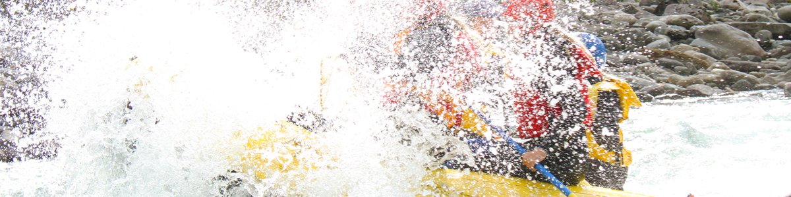
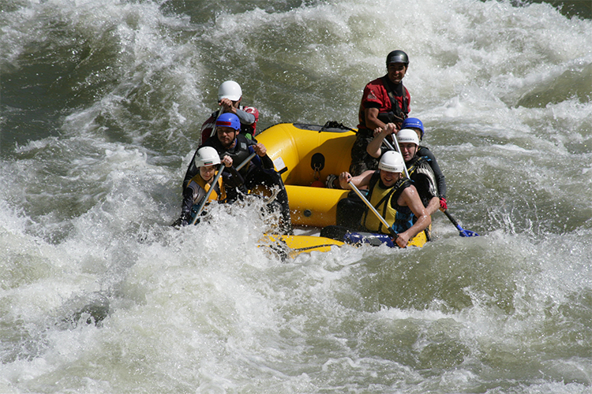
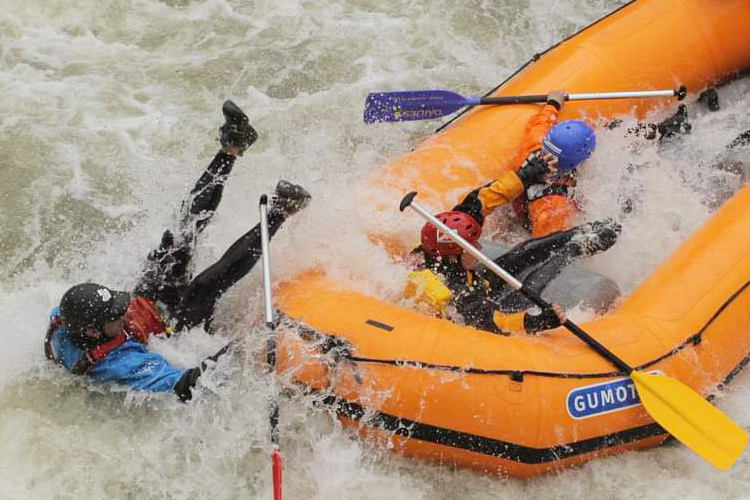
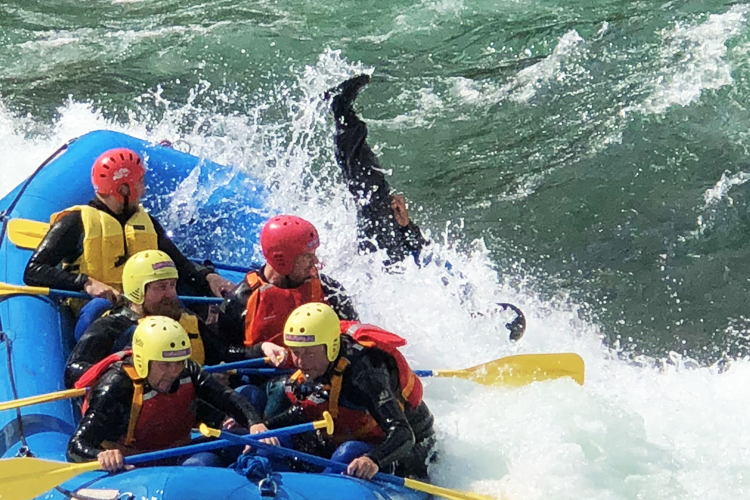
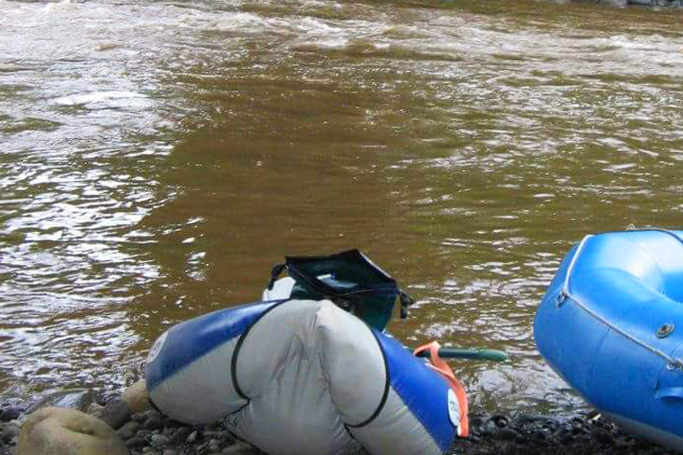

Ríos Mexicanos

Una Expedición de Rafting tan cerca, a tan solo 45 min de Cuernavaca y a una hora y media de Ciudad de México.
Iniciaremos al sur de Estado de Morelos, donde prepararemos y cargaremos todo lo necesario para pasar 5 días en el río, remando, nadando, explorando y acampando en arenosas playas donde podremos admirar la belleza natural que rodea al río Amacuzac.
Esta aventura es para disfrutar de la naturaleza, observándola desde una perspectiva única que solo el río puede regalarnos.
Es ideal para compartir con la familia o con amigos, ya que en su mayoría son rápidos clase II y III, con grandes partes de aguas tranquilas pero con bellas paronámicas.

Son cuatro días de descenso de río (Rafting), iniciando en el Estado de Morelos y terminando en el Estado de Guerrero.
Dependiendo del nivel del agua es donde terminaremos, organizamos dos descensos al año, uno en Julio y otro en Diciembre.
Es ideal para mayores de 15 años, ya que en este tipo de aventuras es importante la participación de todos los miembros de la expedición en las tareas, como son:
Una aventura para admirar la naturaleza y vivir una aventura.

Ríos Mexicanos te proporciona tod el equipo para la realizar la actividada de Rafting, tanto equipo personal como las las balsas, remos, kit de rescate, kit de primeros auxilios y equipo para cargar el material para el campamento y de cocina.
Como todos los recorridos de Ríos Mexicanos se proporciona con seguro en caso de accidente, así como todas las instrucciones necesarias de seguridad para realizar un descenso seguro y divertido.
Incluye:
Lo que no incluye:

Día 1:
Reunión en el Punto de Encuentro donde empacaremos el equipo personal en las hieleras y bolsas secas.
Inicio de navegación y plática de seguridad, así como práctica de remado.
Recorrido de los primeros 14 kilómetros con rápidos clase III con un portaje.
Terminamos en un balneario donde tendremos la comida y montaje del campamento, podremos nadar y disfrutar de un ojo de agua.
Día 2:
21km.
Desayuno y todo el día en el río con rápidos clase II y unos III.
A este campamento que llamamos Huaxtla es una playa en en medio de la naturaleza.
Día 3:
18km.
Desayuno, todo el día en el río con rápidos clase II.
Campamento Atlapa en una playa.
Día 4.
23km.
Desayuno, todo en el río, clase I-II.
Campamento Atenango a orilla del río.
Día: 5.
5km.
Desayuno, último tramo de río hasta llegar a nuestro Punto de salida del río, donde emprenderemos nuestro regreso al Punto de Encuentro donde seacaba la expedición.

Los precios cubren los gastos necesarios para realizar esta expedición.
Incluye 4 desayunos, 5 comidas y 4 cenas. Asi como bebidas hidratantes y frutas.
El precio normal: $5200 por persona.
Precio Club de Río: $3100 por persona.
Contáctanos para más información, con gusto te ayudaremos a satisfacer cualquier duda que tengas.
A tu recorrido le puedes agregar otros beneficios como la visita a un balneario o una carnita asada.
Organizamos paquetes especiales para escuelas y empresas.